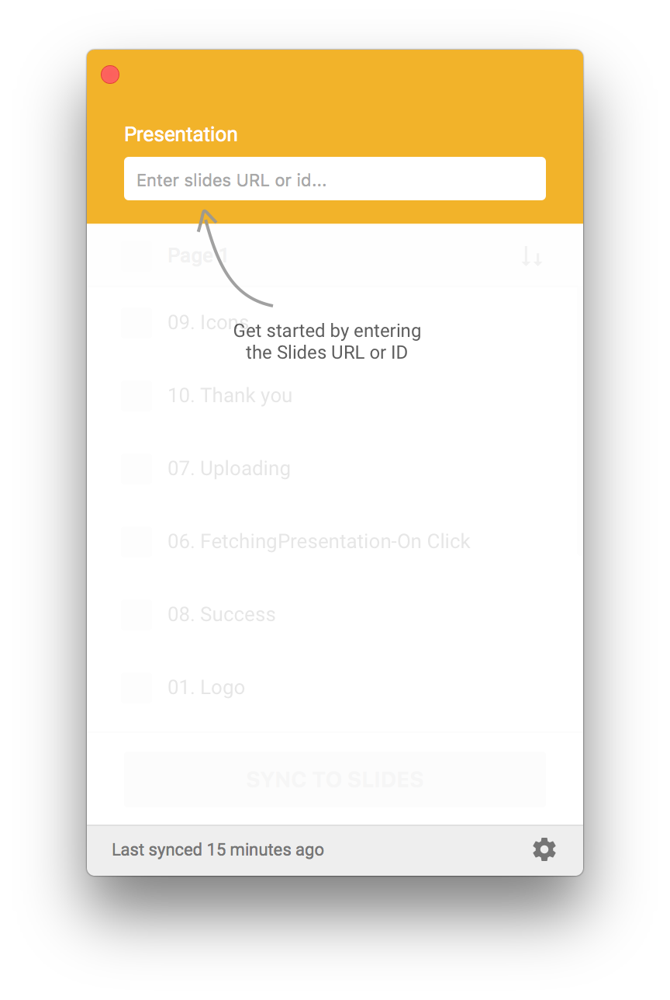
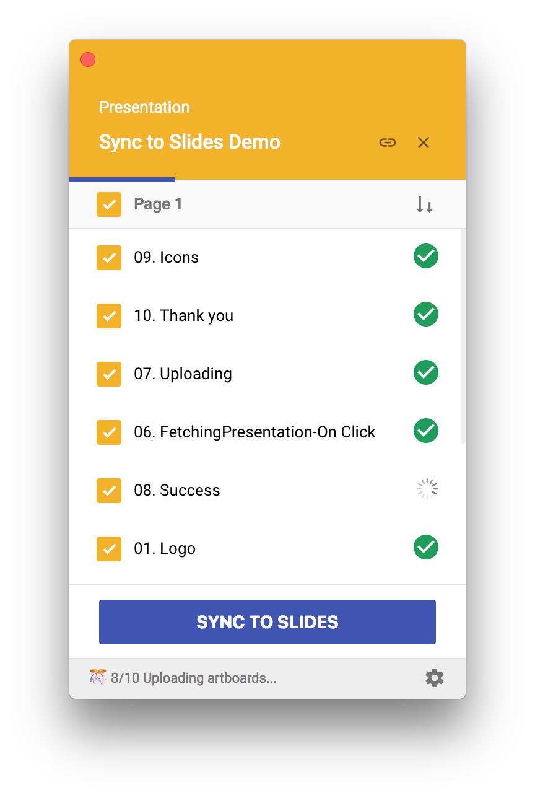

- Download the Sync to Slides plugin here
- Unzip the file by double-clicking it (or by using any unzipping tool)
- Double click on the
sync-to-slides.sketchpluginfile
Installing
Best practices
- Slides API have limited request payload sizes. Don't expect the plugin to work if you sync 50 artboards with ton of layers at a time. The workaround can be select max of 10 artboards at a time.
- You can also lock the layer if you don't want that layer to be exported for targeted commenting. Locking layers that don't need commenting support will drastically decrease the sync time.
- If you don't want commenting support at all, goto settings and say no to export layers.
How this works
To make sure your images are secure, Sync to Slides uploads the exported artboards to a temporary folder (called SyncToSlides) in your Google Drive, pastes each flattened image to a slide in the specified deck, and deletes the temporary folder.
FAQ's
-
How can I choose the export size?
You can click on the Settings icon in the footer and choose the export size. -
Why are my normal export and sync to slides export are differnt?
Sync to slides will upload the image to the drive and then put it on the slides, so it may loose the quailty. -
Can I add other slides?
Absolutly, you add other slides in the deck, they won't be affected. -
How is the subsequent update happens?
Only you upload to slides, the plugin will respect your order in the slides deck and will update in the same order. Which means even the order in your artboard changes, the order in the slides remains.
Usage
1Login
Open up the Sync to Slides plugin (Plugins > Sync to Slides…) and click on the “Sign in with Google” button.

2Get the slides URL or ID
Navigate to a new or existing Slides document, copy the URL, and paste it into the “Slides URL or ID” text field. Alternatively, you can paste just the ID (the slew of alphanumerical characters immediately following “https://docs.google.com/presentation/d/” in the URL).

3Choose artboards
Click the radio button next to the export option you prefer: either all artboards in the current page or just the ones you currently have selected.
4Upload
Click on the “Sync to Slides” button, sit back, and relax. The plugin will do all the work to create a new slide for each artboard you’ve exported.
